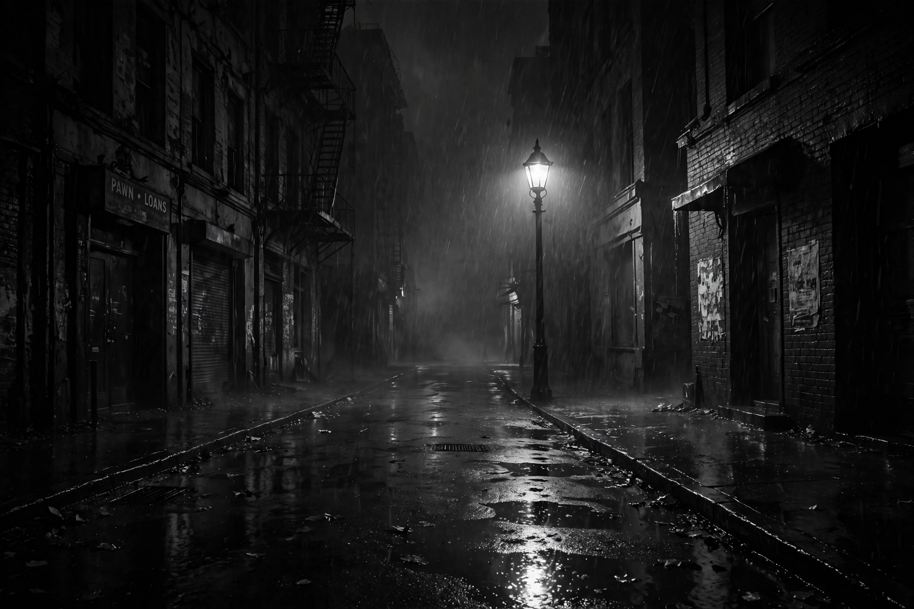

From Wikipedia, the free encyclopedia
| Noir fiction | |
| Origin | United States, 1920s–1950s (pulp magazines, hardboiled school) |
|---|---|
| Key figures | Dashiell Hammett, Raymond Chandler, James M. Cain, Cornell Woolrich, Jim Thompson, Patricia Highsmith, David Goodis |
| Related media | Film noir |
| Subsequent forms | Neo-noir, noir in comics, television, and video games |

Noir fiction is a literary genre closely related to hardboiled crime fiction, characterised by a bleak, cynical worldview, morally compromised protagonists, and an atmosphere of fatalism and psychological unease. Where the classic detective story restores order, noir typically follows criminals, victims, or damaged investigators toward ruin; corruption is systemic, happy endings are rare, and the boundary between guilt and innocence blurs. The term derives from the French roman noir — applied by the Paris publisher Gallimard to its Série noire imprint, launched in 1945 — and from film noir, the label French critics gave to the dark American crime films of the 1940s.
Noir grew out of the American pulp magazines of the 1920s and 1930s, above all Black Mask, where Dashiell Hammett — himself a former Pinkerton detective — pioneered a lean, vernacular prose style. Hammett's novels Red Harvest (1929) and The Maltese Falcon (1930) introduced the Continental Op and Sam Spade; Raymond Chandler followed with Philip Marlowe in The Big Sleep (1939) and the essay "The Simple Art of Murder" (1944), defending the hardboiled mode against the genteel English detective story. In parallel, writers such as James M. Cain (The Postman Always Rings Twice, 1934; Double Indemnity, 1936) stripped the crime novel of the detective altogether, narrating murder from inside the murderers' obsessions; Cornell Woolrich built novels of pure dread around doomed, unstable protagonists.
Scholarly definitions vary, but recurrent features include: a protagonist who is flawed, alienated, or criminally implicated rather than a detached solver of puzzles; a world of institutional corruption — police, courts, wealth — that makes justice unattainable; sexuality as a trap, often embodied in the femme fatale; narrative devices such as the first-person confession, the flashback, and the unreliable narrator; and a fatalistic plot structure in which a single wrong decision tightens like a noose. Stylistically, noir favours terse dialogue, vernacular slang, and sensory detail evoking night cities, cheap rooms, and bad weather.
The paperback-original boom of the 1950s produced darker masters: Jim Thompson (The Killer Inside Me, 1952) wrote from within psychopathic minds; David Goodis chronicled skid-row losers; Patricia Highsmith turned the genre toward psychological suspense and the sympathetic murderer. In France the Série noire and admiration for American noir fed the polar; in Britain, Ted Lewis's Jack's Return Home (1970, filmed as Get Carter) seeded Brit-noir. From the 1970s, "neo-noir" revived the mode across media — in the novels of James Ellroy (L.A. Confidential), Walter Mosley, and Megan Abbott; in Scandinavian crime writing ("Nordic noir"); and in television, comics, and games — while retaining the original's moral twilight and atmosphere of doom.